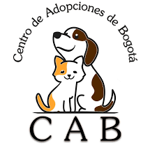
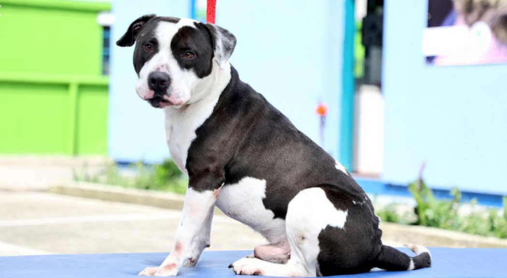

Por el hecho de lo que representan para nosotros los animales, el cariño que les tenemos y lo que bsucamos con nuestro trabajo es un orgullopoder trabajar y ayudar a "El centro de adopciones de bogotá"
hemos venido realizando un trabajo en conjunto en el que nosotros apoyamos la fotografia de los animales que hay en centro y están a la espera de un nuevo hogar, esto con el fin de posteriormente sean publicados por canales digitales y la gente conozca el gran corazón que tiene y puedan llegar a llenar de alegría un nuevo hogar
